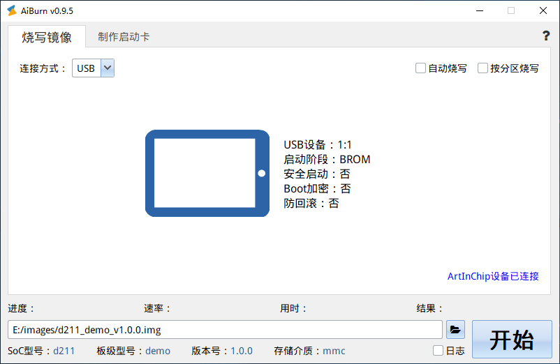

5. 工具¶
ArtInChip 提供两组工具：
AiBurn：单机调试刷机工具
AiBurnPro：一拖八量产刷机工具
5.2. 刷机¶
AiBrun的使用非常简单，选择编译好的镜像，在开发板进入烧写模式后点击“开始”按钮即可自动进行烧写，进入烧写模式有如下几种方式：
终端设备为空片，则上电直接进入 USB 烧写模式
按住“烧录键”启动（上电或者按“重启键”）可直接进入烧录模式
终端设备非空片，如果能进入 U-Boot ，则 在U-Boot 中可以使用 aicupg usb 0 命令进入烧写模式
终端设备非空片，如果能进入 Linux，则执行命令 aicupg ，系统直接重启进入烧写模式

5.3. 调试串口¶
烧写镜像完成后可以通过串口进行信息的查看，默认的调试串口配置信息为
BaudRate：115200
Data bits：8
Stop bits：1
Parity：None
Flow control：None